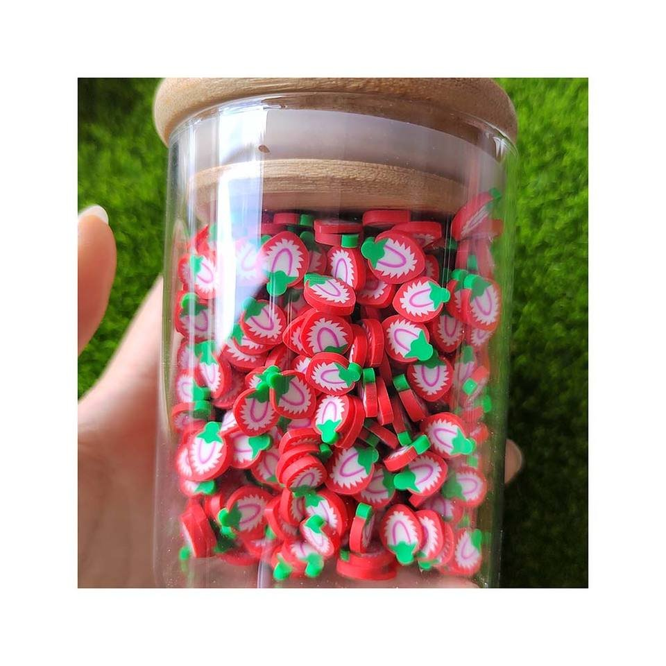
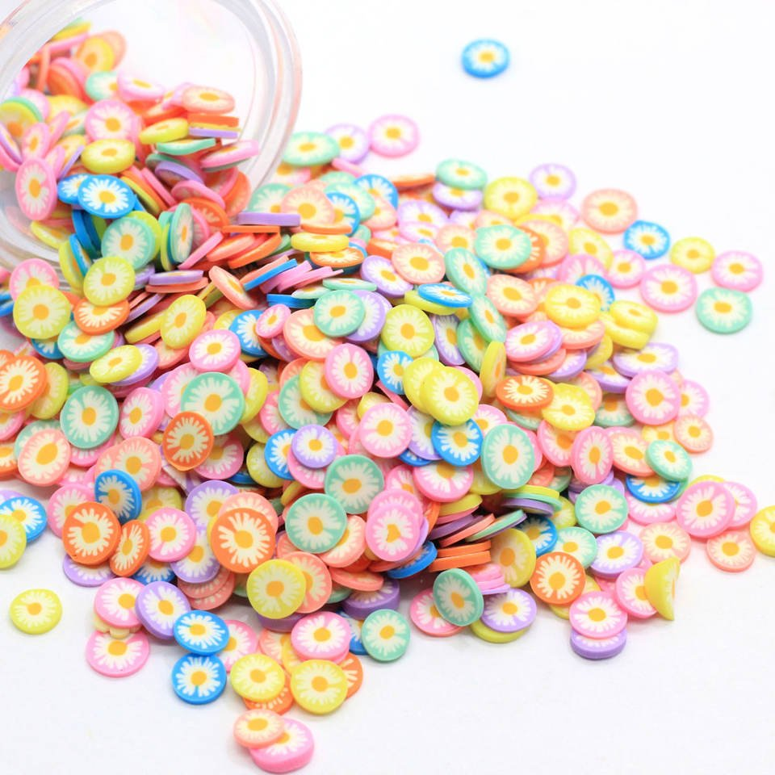

A strawberry tag can work with just one berry beside a handwritten name. A shaker card has room for a few loose pieces behind its window. A slime collection needs a design that still shows clearly beside the jar and label. Start there, before choosing a whole bag of matching extras.
Pink strawberries or red cross-sections?
YX693 has a pale pink body, cream-white dots and a light green cap. It is an easy starting point for a soft pink card or a pastel gift label. YX318 shows the inside of a strawberry: a red edge around a white-and-pink center, with a green cap at the top. Try that design beside a red label or a summer fruit illustration.
The listed size is 5 mm for YX693 and approximately 5 mm for YX318. That does not make them interchangeable in a tight space. Lay the actual pieces on your printed design and ask about thickness if they need to sit inside a window or under a finish.

Pink strawberry slices
Pale pink berries, light green caps and cream-white dots.
- Listed size
- 5 mm
- Reference pack
- 500 g/bag


Strawberry cross-section slices
Red outlines, green caps and white-and-pink centers.
- Listed size
- Approximately 5 mm
- Reference pack
- 500 g/bag

Original product photographs. The nail tip and photographed container are presentation references, supplied separately from the decorative slices.
1. Build the strawberry theme around the slime jar
Put a few sample berries beside the jar, lid and label. The red YX318 design gives you a clear fruit motif; pink YX693 follows a quieter palette. Pick one as the main strawberry, then see whether a few leaves or daisies add anything. You may find the berry alone is enough.
For strawberry sprinkles used in slime, test every selected component in your own formula. Keep a note of the amount added, take a photo at the start, and review the texture, appearance and any color transfer over the period relevant to your product. A result in one formula does not establish the same result in another.
You can also compare a topped jar with a separate decoration packet. Decide the packet quantity from your own trial rather than copying a dose from another product. The clay slices and resin charms guide covers further material choices for slime.
2. Leave room for the pieces to move in a shaker card
Try pink YX693 beside a few YX241 daisies for a strawberry garden card. For a red fruit-patch design, place YX318 beside YX329 leaves. Keep the greeting visible and use the window as a frame for the small shapes.
Before sealing the card, check the thickest piece against the space inside the window. Move the card gently and watch whether the shapes travel freely or catch at an edge. Adding more filler can hide the artwork and leave less room for movement, so start with a sparse arrangement.
Here are the two supporting motifs from the catalog. They are separate products, so list the codes separately if you want to discuss a combined assortment.

Green leaf slices
Light green leaves with pale branching veins.
- Listed size
- 5 mm
- Reference pack
- 500 g/bag


Daisy flower discs
Colored discs with white petals and yellow centers.
- Listed size
- 5 mm
- Reference pack
- 500 g/bag

How much should you order for a small collection?
All four catalog references list 500 g per bag. Weight alone does not tell you how many berries, leaves or daisies are inside. If your kit calls for a fixed number of pieces, count a sample before estimating the order.
For weight-based repacking, 500 g divided into 10 g portions gives 50 portions before handling loss. That is a calculation example, not a ready-made retail pack or a suggested slime dose. Try filling the actual packet, allow for your packing process, and ask for a quotation using clear units.
The listed bag weight is not the minimum order. Current availability, MOQ, sample charges, any combined mix and delivery arrangements are confirmed with the selected SKUs. The bulk sprinkle buying guide explains the wider sourcing checks.
A few questions before choosing the slices
Are the strawberry sprinkles edible?
No. They are decorative craft components. Keep that description clear on the finished pack, particularly when a fruit or dessert theme could cause confusion.
Can these pieces be used for nail art?
Compare the selected sample with the nail area and intended finish. You need the thickness and a suitable attachment method as well as the listed size; a styling photo cannot establish fit on its own.
Can I buy strawberries, leaves and daisies together?
Send the product codes and describe the proportions you would like. The four references here are separate catalog items. A custom mix needs an availability and packing review before it can be quoted.
Choose the pieces for your strawberry project
Start with YX693 or YX318, then add a leaf or daisy only if the layout needs it. Send the codes, intended use, quantity and unit, packing needs and destination. Include any thickness or sample question you need answered.
Browse all polymer clay slices and sprinkles
Ask about samples and packing